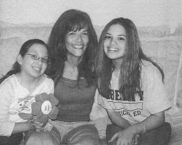
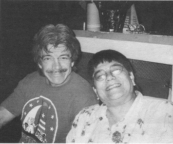
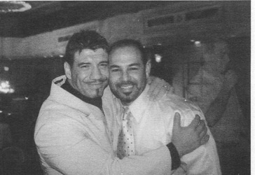
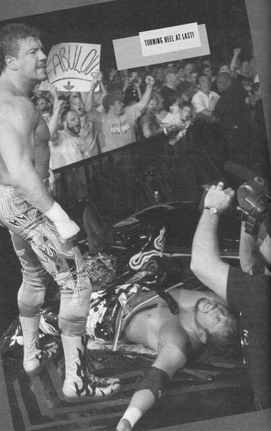

Глава 40
Перевод Александра Суменко для VSplanet.net
У меня было много причин оставаться трезвым. Мне это раньше не приходило в голову, но у меня было много того, ради чего стоило жить.
Вся моя жизнь изменилась, когда я стал трезвым. Все стало другим. Мой мир стал меньше и более сфокусирован. Я понял, что мне неинтересно быть с кем-то, кроме Викки и девочек. У меня так мало времени. Когда я не работаю, я провожу время с семьей. Я потратил впустую 10 лет жизни. Теперь все свободное время я посвящаю детям и жене.
Я стал более тихим и замкнутым, и это напугало многих. Все знали меня как неунывающего парня, всегда смеющегося и развлекающегося. Теперь я более серьезная личность. Люди видят, как я замыкаюсь в себе, и не понимают, что я гораздо более счастлив, чем раньше. Я примирился с самим собой. Мне не нужно забираться на гору и кричать всем, что я счастлив.
Некоторые принимают мою сосредоточенность за надменность, словно я смотрю сверху вниз на людей, которые пьют. Они думают, что я считаю себя лучше их, что абсолютно неверно. Я просто знаю, что мне полезно, что лично я могу или не могу делать. Я не смотрю сверху вниз ни на кого.

Шерилин, моя сестра Линда и Шол
Люди не понимают, как сильно я повзрослел за последние несколько лет. Большую часть жизни я вел себя как ребенок, но я уже не такой. Я ответственный взрослый человек.
Алкоголь дает тебе оправдание вести себя как подросток намного позже того, когда тебе уже пора стать взрослым. Ты перестаешь расти эмоционально. Поэтому я словно перескочил с 16 на 37 за пару лет. Это не значит, что я иногда не веду себя, как большой ребенок, просто теперь это не вызвано алкоголем в голове.
Тяжелее всего мои жизненные перемены было принять некоторым членам моей семьи. Все они хотели видеть меня трезвым, а когда это случилось, я стал казаться им другим. Наверное, людям нужно время, чтобы примириться с мыслью, что ты уже не тот, что был раньше.

Эктор и Мария, Рождество 2003 года
Я знаю, что семья счастлива за меня, но в то же время они не знают, как со мной обращаться. Они хотят защищать и уважать меня, но я не думаю, что они знают, как вести себя со мной. Я только прошу, чтобы они понимали мои ограничения и принимали то место, которое занимают в моей жизни.
Тяжелее всего принять мою перемену было сестре Линде. Было время, когда мы просто не могли разговаривать. Мы даже ругались по телефону. «Не звони мне больше, — сказала тогда она. — Мне кажется, что я тебя совсем не знаю».

Я и Чавито после WrestleMaina XX
Она слишком остро отреагировала на мой трезвый образ жизни. Мы помирились, когда я помог ей понять мою новую жизнь, объяснил, что вынужден оградиться от мира стеной и посвятить свое время Викки и детям. Теперь наши отношения лучше, чем когда-либо раньше. Вся ее семья: мой зять Гилберт, дети Мелоди, Николь, Эрик — все относятся ко мне превосходно.
К несчастью, за последние несколько лет мои отношения с братьями ухудшились. Но я верю, что Господь восстановит эти связи и братья снова станут такими как прежде и даже лучше. Все дело в понимании ими моей новой жизни. Думаю, им просто нужно время, чтобы привыкнуть к новому Эдди.
Дело не только в трезвом образе жизни. Я добился некоторых успехов (не со своей точки зрения, а с точки зрения других людей), и это повлияло на мою семью. Думаю, моим братьям непросто получать удовольствие от моих успехов в WWE. Они не могут не думать: «А почему мне не предоставили такие возможности?»
Я не говорю, что братья не добились выдающихся результатов, каждый из них был невероятно успешен в нашем деле. Просто сами возможности в те времена были другими. Индустрия тогда не позволила бы рестлеру-чикано достичь высот, которых он был достоин.
Я надеюсь, что братья понимают, как мне не хватает хороших отношений с ними и как больно мне переживать их отсутствие. Иногда я задаюсь вопросом, не виноват ли во всем я. Может, я что-то делаю неправильно? Недостаточно их уважаю?
Но я не верю, что дело в этом. Я младший брат, и я всю жизнь прожил с ощущением, что они всегда правы, а я нет. Со временем я узнал, что это не всегда так. Теперь я могу защитить свои ценности. Я не позволю переступать через себя. Я установил свои границы и думаю, что им это не нравится. Я всегда был для них младшим братом, но я уже не ребенок.
Думаю, тяжелее всего принять мои перемены было тем людям, которые были со мной в самые тяжкие времена.
Спустя примерно год после того, как я бросил пить, мы с Чавито были в аэропорту и проходили регистрацию перед вылетом. Он прошел вперед и, закончив регистрацию, остался ждать меня в сторонке.
— Иди к выходу, брат, — сказал я.
— Нет, все нормально, — ответил Чаво. — Я подожду.
— Чавито, иди. Все в порядке.
Посмотрев на него, я понял, о чем он думает.
— Я больше не пью, брат.
Чавито грустно улыбнулся. «Извини», — сказал он.
Увидев, как он стоит там, готовый снова убрать за мной мусор или помочь пройти регистрацию, я почувствовал сильную горечь и подумал: «Боже, через что этот парень прошел по моей вине?»
Я понял, что не только Викки заботилась обо мне. За мной долгие годы приглядывал целый отряд друзей и сотрудников, которые следили, чтобы я не облажался и не попал в неприятности.
Я никогда не хотел становиться для кого-то обузой. Это стало привычкой, когда я пил — люди заботились обо мне, а я позволял им это делать.
Я так напивался, что люди несли меня в номер на руках. Некоторые парни шутят об этом до сих пор, что причиняет мне боль. Унизительно думать о себе в таком ключе. Только оказавшись в клинике, я понял, как сильно окружающие заботились обо мне.
Я понимаю, что у меня были проблемы, а любящие меня люди присматривали за мной. Когда кто-то болеет, мы ухаживаем за ним. Так делают с любимыми. Ты заботишься о них и не можешь ненавидеть их за это состояние. Это не значит, что я не стыжусь своей зависимости от других.
Несмотря ни на что, одним из горстки людей, кто никогда меня не осуждал, был Чавито. У него на это едва ли не больше прав, чем у кого-либо, но он просто не такой человек. Наверняка, он испытывал негодование, но он полон любви к окружающим. Я извинялся перед ним бесчисленное количество раз, и он прощает мне все.
— Я забочусь о тебе, потому что люблю тебя, — объяснил он однажды. — Ты бы сделал то же самое для меня.
— Это правда, бро, — ответил я. — Разница в том, что мне никогда не придется это делать.
Чавито пришлось провести с новым мной больше времени, чем любому другому члену семьи. Думаю, поэтому он способен оценить перемены во мне, тот факт, что я уже не тот Эдди, каким был раньше.
В каком-то смысле Чавито продолжает присматривать за мной. С ним я могу разговаривать, как ни с кем другим, изливая свои сомнения, и проблемы, и обиды. «Просто дай этому выход, мужик, — говорит он. — Для этого я здесь». Я всегда буду любить его за это. Он мой кореш.
Крис Бенуа также никогда не жаловался на то, что приходится заботиться обо мне. По крайней мере, он всегда был одним из немногих, кто никогда не говорил мне, что ему это стоит поперек горла. За это я всегда буду любить его.
Когда мы путешествовали вместе, Крис присматривал за мной на каждом шагу. Дошло до того, что каждое утро он стучал в дверь моего номера, чтобы разбудить меня и собрать на самолет. «Давай, мужик, — говорил он. — Вставай! Викки надерет твою задницу, если ты не появишься дома вовремя».
Когда я привык к трезвой жизни, я поговорил с Дином и Крисом и попросил прощения за все, через что им пришлось пройти. «Не переживай об этом», — сказали оба. Но я переживаю. Я знаю, что этот долг я никогда не погашу в полной мере.
К несчастью, у меня не было возможности извиниться перед всеми, кто помогал мне все эти годы, например, перед Перри Сатурном. Я надеюсь, они знают, как сильно я благодарен за их доброту, любовь и поддержку в то время, когда они мне были более всего необходимы.

Наконец-то стал хилом!